7.5. Developing Course Units#
To work with units in the course outline and develop your course, you need to understand the following concepts and complete the following tasks.
You add content to units with course components.
7.5.1. What Is a Unit?#
A unit is a part of a subsection that learners view as a single page.
A unit contains one or more components, such as text with HTML markup, problems, a discussion, or a video.
7.5.2. Viewing Units in the Outline#
In the following image, the Studio view of the course outline is on the left. On the right is the view of the course outline in the LMS.

The numbers represent the following levels.
Note
The Course Outline page does not show components. You add or access components by selecting the units that contain the components.
7.5.2.1. Course Progress Information#
The course outline in the LMS also indicates a learner’s progress through the course. A green check mark next to the name of a section, subsection, or unit indicates that a learner has completed all the following actions in the section, subsection, or unit.
Viewed all of each video.
Submitted answers for all of the problems.
Viewed all HTML content for at least five seconds.
If a learner selects the Resume Course option, the course opens to the unit that the learner most recently completed.
For information about more specific learner data, including the learner’s grades or answers for individual problems, see Managing Learner Progress and Grades.
7.5.3. Viewing the Unit Page#
In Studio, when you select a unit name in the outline, the Unit page opens.
The following example shows a unit page in Studio with two components, with circles and text to show different areas and controls in the page.
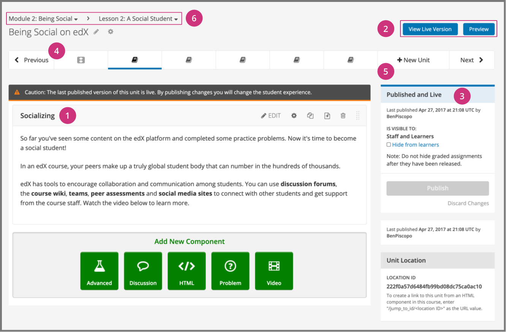{kind=link}
A component in the unit.
Options for testing the unit.
Status panel for the unit.
A unit navigation bar that shows where in the subsection this unit is located, and provides easy navigation options to nearby unit pages.
A way to add new units to a subsection through the unit navigation bar.
Navigation tools to quickly get to other sections or subsections.
7.5.4. Viewing Units as a Learner#
To a learner using the edX learning management system (LMS), each unit in the subsection is represented by an icon in the unit navigation bar at the top of the Course page. The current unit is indicated with bold underlining in the unit navigation bar. The components in the current unit appear below the unit navigation bar.
The following image shows a subsection in the LMS that contains several units.
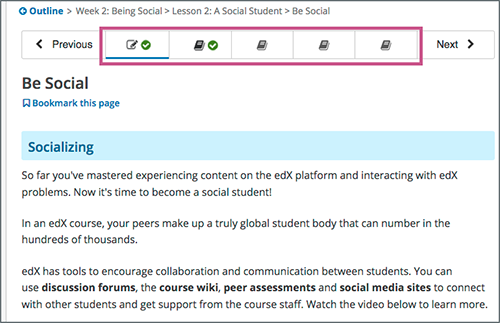{kind=link}
A green check mark next to a unit icon indicates that a learner has completed the unit. A learner has completed the unit if the learner has completed all the following actions.
Viewed all of each video.
Submitted answers for all of the problems.
Viewed all HTML content for at least five seconds.
7.5.5. The Unit Workflow#
When you have set up the section and subsection in the course outline, you then work with units.
The typical workflow includes these steps.

You publish the unit after you add all of its components. If you make additional modifications, you must publish the unit again for the changes to be visible to learners.
As you work through these steps, the publishing status of the unit changes. The publishing status controls the content available to learners, along with release dates (in an instructor-paced course). See the next section for more information.
Note
Release dates apply only to instructor-paced courses. For more information about instructor-paced and self-paced courses, see Course Pacing.
7.5.6. Unit Publishing Status and Visibility to Learners#
The following information summarizes whether or not learners can see a unit.
Learners never see a unit with the publishing status Draft (Never Published).
Learners never see a unit with the publishing status Visible to Staff Only. For more information, see Hide a Unit from Learners.
Learners do not see a unit with the publishing status Published Not Yet Released until the release date (in an instructor-paced course). On the release date, the status changes to Published and Live.
If the publishing status is Published and Live, learners see the current version of the unit.
If the publishing status is Draft (Unpublished Changes), learners see the last published version of the unit if the release dates for the containing section and subsection have passed.
If you used access settings to specify that a unit is available only to specific groups of learners (such as content groups associated with particular cohorts, or enrollment track groups), only those learners who are in groups to which you have given access can see the unit after it is published and live.
For more information, see Controlling Content Visibility and Access. For information about testing content, see Testing Your Course Content.
7.5.7. Unit Publishing Statuses#
As a course author, you work with units that have the following statuses.
7.5.7.1. Draft (Never Published)#
When you create a new unit and add components to it, the unit’s publishing status is Draft (Never Published), as shown in the status panel.
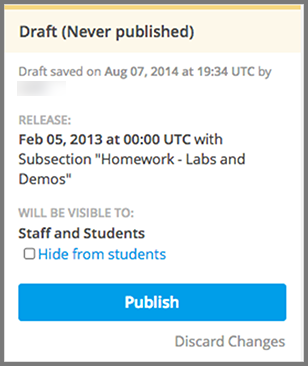{kind=link}
Note
The Release section applies only to instructor-paced courses. It does not appear for units in self-paced courses. For more information about instructor-paced and self-paced courses, see Course Pacing.
In Studio, you see the draft content as you develop the unit. Though you do not see the unit in the LMS, you can preview the unit.
Learners never see a unit with this status, even after the release date (in an instructor-paced course). You must publish the unit for it to be included in the LMS.
7.5.7.2. Published and Live#
You published the unit and have not modified it. The release dates for the section and subsection have passed (in an instructor-paced course). You, and enrolled learners, see the current version of the unit.
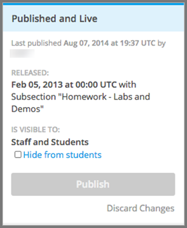{kind=link}
The Release section applies only to instructor-paced courses. It does not appear for units in self-paced courses. For more information, see Course Pacing.
7.5.7.3. Published (not yet released)#
You published the unit, but the release date is still in the future. Learners cannot see this unit until the release date passes.
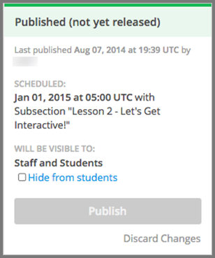{kind=link}
This status applies only to instructor-paced courses. It does not apply to self-paced courses.
7.5.7.4. Draft (Unpublished changes)#
When you edit a published unit, whether or not it is released, the unit’s publishing status changes to Draft (Unpublished Changes), as shown in the status panel.
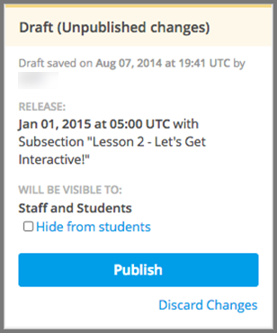{kind=link}
The Release section applies only to instructor-paced courses. It does not appear for units in self-paced courses.
In Studio, you see the draft content as you develop the unit. You can preview the changes to a unit to test how your changes will appear to learners after you publish the unit.
If the release date has passed in an instructor-paced course, learners see the last published version of the unit. If the release date is in the future, learners cannot see your content. You must publish the unit for learners to see your changes.
7.5.7.5. Visible to Staff Only#
When you hide a unit from learners, the unit’s publishing status changes to Visible to Staff Only.
The publishing status of a unit also changes to Visible to Staff Only if you hide the parent section or subsection from learners.
Learners never see a unit with this status, even if it has been published and the release date has passed (in an instructor-paced course).
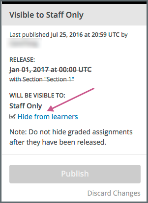{kind=link}
The Release section applies only to instructor-paced courses. It does not appear for units in self-paced courses.
7.5.8. Create a Unit#
You can create a unit from the outline or create a unit in the same subsection from the unit page.
To create a unit from the outline, follow these steps.
In the outline, expand the subsection in which you want to create a new unit.
Select New Unit at the bottom of the expanded subsection. A new page opens for you to add components to the unit.
On the unit page, the unit name is selected. Supply an identifying name. A descriptive name can help learners locate content in the course. It can also help you select content when you analyze performance in edX Insights.
Add components to the new unit as needed.
To create a unit from a unit page, follow these steps.
In the Unit Navigation Bar area, select New Unit.
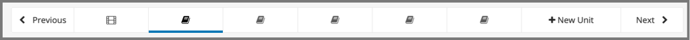The unit page for the new unit opens automatically.
On the unit page, the unit name is selected. Supply an identifying name. A descriptive name can help learners locate content in the course. It can also help you select content when you analyze performance in edX Insights.
Add components to the new unit as needed.
{kind=link}
You must then publish the unit to make it visible to learners.
7.5.9. Edit a Unit#
You can edit a unit in the following ways.
When you make any of these changes, if you previously published the unit, the state changes to Draft (Unpublished Changes). You must then publish the unit to make your edits visible to learners.
If you are designing your course to offer different content to different groups of learners, you can also Set access restrictions for the unit to specify which learner groups a unit is available to.
7.5.9.1. Edit the Unit Name#
To edit a unit name, on the unit page in Studio, select Edit next to the name.
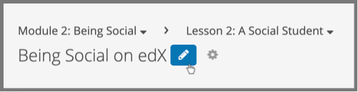{kind=link}
The name field becomes editable. Enter the new name, and then tab or click outside of the field to save the name.
7.5.9.2. Reorganize Components in Units#
You can reorganize components within a unit by dragging and dropping them to new locations.
To change the location of a component, move your mouse pointer over the Drag to reorder handle on the component toolbar. The pointer changes to a four- headed arrow. You can then drag the component to the location that you want.
In the image that follows, the handle for the discussion component is selected.
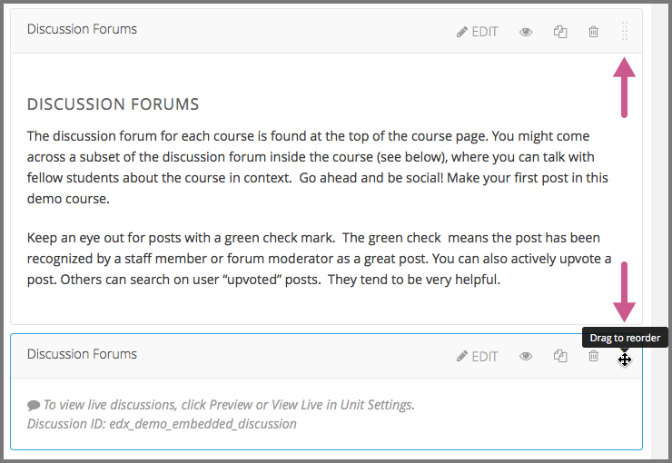{kind=link}
A blue outline indicates where the component will land when you release the mouse button. For example, in the image below, the discussion component is being moved to the top of the unit.
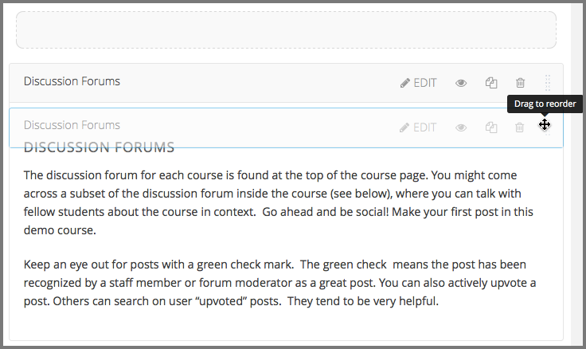7.5.10. Set Access Restrictions For a Unit#
If you have more than one enrollment track in your course, or if you have enabled cohorts, you can limit a unit’s availability to specific groups of learners. For information about offering different content to different learner groups, see Offering Different Content to Different Learner Groups.
Note
A unit’s group access settings are inherited by components in the unit. If you set additional group access restrictions for a component, make sure the component access settings do not contradict the unit access settings. For example, you cannot give Group A of learners access to a component if Group A does not have access to the unit that contains the component.
Tp specify a unit’s access settings, follow these steps.
In Studio, select Content, and then select Outline.
For the unit that you want to restrict access to, select the Configure icon in the unit’s toolbar.
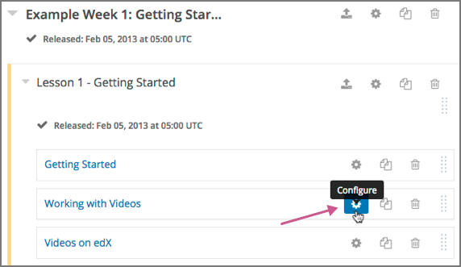You can also access the Restrict access to option from the gear icon next to a unit’s name on a unit page in Studio.
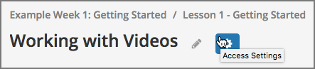In the unit’s Settings dialog box, for the Restrict access to option, select the group type by which you want to restrict access.
The Enrollment Track Groups option is available only if your course has more than one enrollment track. The Content Groups option is available only if you have created content groups for use with cohorts.
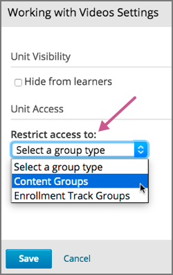After you select a group type, you see a list of the groups that exist for that group type.
{kind=link}
{kind=link}
{kind=link}
{kind=link}
{kind=link}
7.5.11. Preview a Unit#
You preview a unit to review and test the content before it is visible to learners.
You can preview a unit before it is published and before the course is live. In a live course, after the unit is published and if there are no pending changes, previewing a unit is exactly the same as viewing the live version of the unit.
To preview the unit, select Preview above the status panel in the Studio unit page.
The unit opens in preview mode in the LMS.
Note
When you are revising a previously published unit, it can be helpful to preview your changes in one browser window and view the published unit in a second window.
For information about previewing and testing content, see Testing Your Course Content.
7.5.12. Publish a Unit#
Publishing a unit makes the current version of the unit in Studio available to learners. In an instructor-paced course, the release dates for the section and subsection must also have passed for learners to access a published unit.
You publish a unit that has a status of Draft (Never Published) or Draft (Unpublished Changes). When you publish a unit, the status changes to Published and Live or Published Not Yet Released.
You can publish a unit from the unit page or the course outline.
For more information about instructor-paced and self-paced courses, see Course Pacing.
7.5.12.1. Use the Unit Page to Publish a Unit#
To publish the unit, select Publish in the status panel.
7.5.12.2. Use the Outline to Publish a Unit#
To publish a unit from the outline, select the Publish icon in the box for the unit.
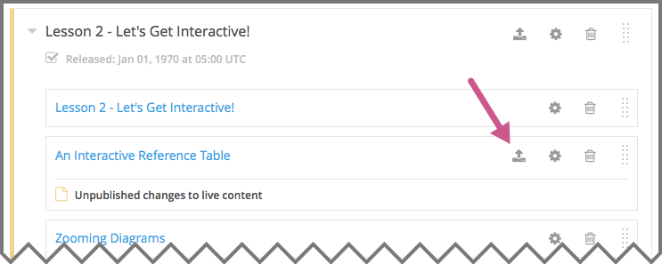{kind=link}
Note
The Publish icon only appears when there is new or changed content in the unit.
7.5.13. Discard Changes to a Unit#
When you modify a published unit, your changes are saved in Studio, though the changes are not visible to learners until you publish the unit again.
If you decide that you never want to publish your changes, you can discard the changes so that Studio reverts to the last published version of the unit.
To discard changes and revert the Studio version of the unit to the last published version, select Discard Changes in the status panel.
Caution
When you discard changes to a unit, the changes are permanently deleted. You cannot retrieve discarded changes or undo the action.
7.5.14. View a Published Unit#
To view the last published version of a unit in the LMS, select View Live Version at the top of the page.
The unit page opens in the LMS in Staff view. You might be prompted to log in to the LMS.
If the unit status is Draft (Unpublished Changes), you do not see your changes in the LMS until you publish the unit again.
If the unit status is Draft (Never Published), View Live Version is not enabled.
For information about viewing and testing content, see Testing Your Course Content.
7.5.15. Hide a Unit from Learners#
You can prevent learners from seeing a unit regardless of the unit status or the release schedules of the section and subsection.
For more information, see Visibility Settings.
You can hide a unit from learners using the course outline or the unit page.
7.5.15.1. Use the Unit Page to Hide a Unit#
In the status panel, select Hide from learners.
The Release section applies only to instructor-paced courses. It does not appear for units in self-paced courses.
For more information, see Controlling Content Visibility and Access.
7.5.15.2. Use the Outline to Hide a Unit#
Select the Configure icon in the unit box.
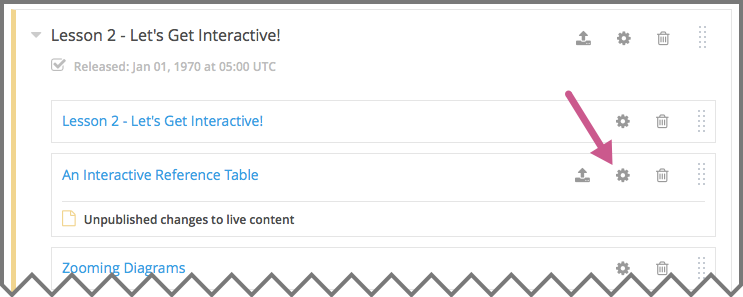The Settings dialog box opens.
In the Unit Visibility section, select Hide from learners.
Select Save.
{kind=link}
7.5.16. Delete a Unit#
You delete a unit from the course outline in Studio.
When you delete a unit, you delete all components within the unit.
Warning
You cannot restore course content after you delete it. To ensure that you do not delete any content that you need later, move the unit to a hidden section or subsection instead of deleting it.
To delete a unit, follow these steps.
On the course outline page in Studio, select the Delete icon in the box for the unit you want to delete.

When you receive the confirmation prompt, select Yes, delete this unit.